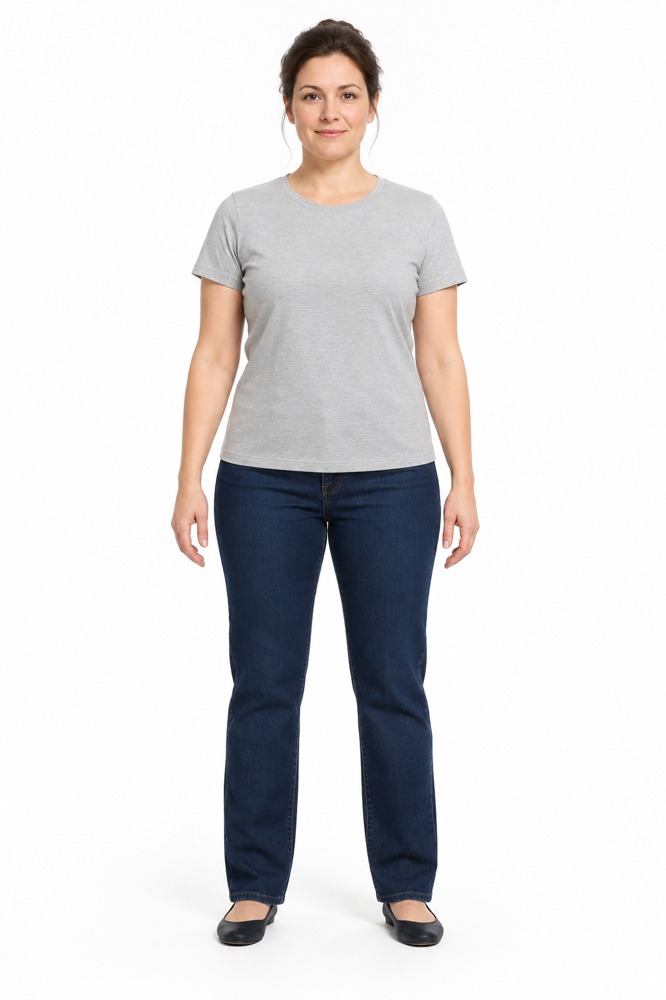
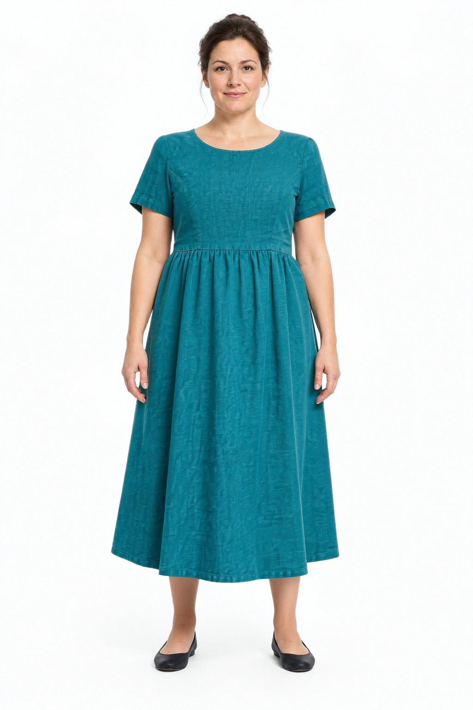

Style, with perspective.
This is an AI visualization. Fit, size, fabric, colour, print and body details may change. It does not establish garment condition or authenticity.
A SECOND LIFE. A FIRST LOOK.
One original. One recorded possibility. Compare the details, then ask the questions a preview can’t answer.
01 / LOOK CLOSER
FULL IMAGE · NO RETOUCHINGSlide between the original synthetic image and the saved YouCam preview.


Drag the slider, or use the arrow keys when it is focused. Left reveals the original; right reveals more of the result.
Loading the two local image files…
This is an AI visualization. Fit, size, fabric, colour, print and body details may change. It does not establish garment condition or authenticity.
The original is an AI-generated fictional adult, created without a real person’s reference photo. The teal dress is an invented synthetic garment. The result is the saved output from YouCam Clothes V4.
No body scores or beauty grades. No measured environmental benefit or reduction in returns is claimed. Actual measurements and seller evidence still matter.
SOURCE & DISCLOSURE
Concept, interface and code were prepared with AI coding assistance from Codex. The input images were generated with OpenAI’s image generation tool. The outfit result was generated by YouCam Clothes V4 and saved locally; no image pixels have been changed for this viewer.
The MIT-licensed functional Node source is a separate local build. Running live generation requires your own permitted API key and suitable input permissions. This recorded viewer has no live API or generation features.
This viewer is supplementary evidence, not a claim that it alone satisfies contest judging access requirements. No submission or award is claimed. The source link opens an external site; this viewer otherwise uses only its local files.